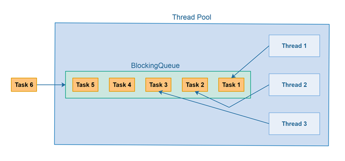
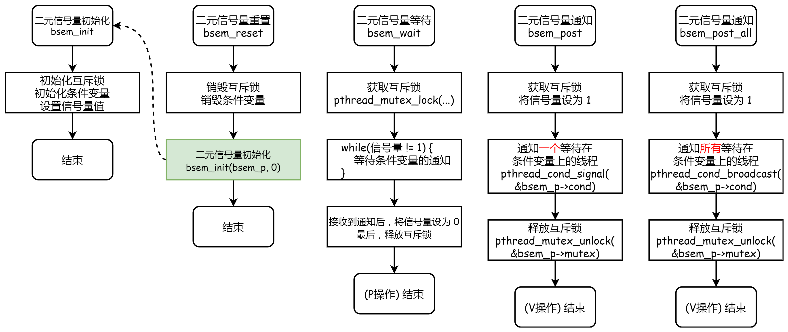

线程池（Thread Pool）是一种基于 池化思想 管理线程的工具，经常出现在多线程服务器中，如 MySQL。
线程过多会带来额外的开销，其中包括创建销毁线程的开销、调度线程的开销等等，同时也降低了计算机的整体性能。线程池维护多个线程，等待监督管理者（worker）分配可并发执行的任务。这种做法，一方面避免了处理任务时创建销毁线程开销的代价，另一方面避免了线程数量膨胀导致的过分调度问题，保证了对内核的充分利用。
为什么选择线程池
创建线程可能是非常昂贵的。通常每个线程都会执行几乎相同的任务，包括创建线程、执行任务和销毁线程等。线程本身相当 heavy —— 创建或销毁线程会占用很多本来想要执行的任务时间。因此，重用线程是一个很好的选择。
线程池的另一个好处是它可以防止系统过载（overloaded），它允许 限制线程数量、任务排队，并仅在线程可用时运行任务。
线程池维持固定数量的线程，并等待执行特定任务。该线程池可以设计为根据您需要完成的工作量进行扩展，但我更喜欢 指定固定数量的线程 。为了确定这个数量，通常可以考虑 使用系统上的核心 / 处理器数量加一。
线程池的好处
使用线程池可以带来一系列好处：
- 降低资源消耗（系统资源）：通过池化技术重复利用已创建的线程，降低线程创建和销毁造成的损耗。
- 提高线程的可管理性（系统资源）：线程是稀缺资源，如果无限制创建，不仅会消耗系统资源，还会因为线程的不合理分布导致资源调度失衡，降低系统的稳定性。使用线程池可以进行统一的分配、调优和监控。
- 提高响应速度（任务响应）：任务到达时，无需等待线程创建即可立即执行。
线程池解决的问题
线程池解决的核心问题就是资源管理问题。在并发环境下，系统不能够确定在任意时刻中，有多少任务需要执行，有多少资源需要投入。这种不确定性将带来以下若干问题：
- 频繁申请 / 销毁资源和调度资源：将带来额外的消耗，可能会非常巨大。
- 对资源无限申请缺少抑制手段：易引发系统资源耗尽的风险。
- 系统无法合理管理内部的资源分布：会降低系统的稳定性。
线程池如何工作
可以将任务传递到线程池，而不是为每个任务启动一个新线程来并发地执行。一旦池中有任何空闲线程（idle threads），任务就会分配给其中一个空闲线程并执行。在内部，任务被插入到阻塞队列（Blocking Queue）中，池中的线程将从该队列中出队。当一个新任务被插入队列时，其中一个空闲线程将成功地将其出队并执行它。池中的其余空闲线程将被阻塞，等待任务出队。
何为阻塞队列（Blocking Queue）？
C-Thread-Pool
后续内容是对基于 C 语言实现的线程池的开源项目 C-Thread-Pool 的学习。
公共接口
| Function example | Description |
|---|---|
thpool_init(4) |
Will return a new threadpool with 4 threads. |
thpool_add_work(thpool,func_p,arg_p) |
Will add new work to the pool. Work is simply a function. You can pass a single argument to the function if you wish. If not, NULL should be passed. |
thpool_wait(thpool) |
Will wait for all jobs (both in queue and currently running) to finish. |
thpool_destroy(thpool) |
This will destroy the threadpool. If jobs are currently being executed, then it will wait for them to finish. |
thpool_pause(thpool) |
All threads in the threadpool will pause no matter if they are idle or executing work. |
thpool_resume(thpool) |
If the threadpool is paused, then all threads will resume from where they were. |
thpool_num_threads_working(thpool) |
Will return the number of currently working threads. |
接口使用实例
We create a pool of 4 threads and then add 40 tasks to the pool (20 task1 functions and 20 task2 functions). task1 and task2 simply print which thread is running them.
1 |
|
As soon as we add the tasks to the pool, the threads will run them. It can happen that you see a single thread running all the tasks (highly unlikely). It is up the OS to decide which thread will run what. So it is not an error of the thread pool but rather a decision of the OS.
数据结构组织关系
C-Thread-Pool 实现的线程池包括如下数据结构：
- 线程池数据结构：包括申请创建的每个线程的地址、任务队列等；
- 线程数据结构：包括创建的线程、线程所属的线程池等；
- 任务队列数据结构：包括一个是否存在任务的信号量；
- 任务数据结构；
- 信号量数据结构。
二进制信号量接口
线程池接口
线程池初始化
流程图左一：struct thpool_* thpool_init(int num_threads)
- 分配线程池内存空间
1 | typedef struct thpool_ { |
- 初始化任务队列
1 | jobqueue_init(&thpool_p->jobqueue); |
- 创建线程池中的二级指针
thpool_p->threads，它指向一个struct thread *类型指针的 指针数组。
1 | thpool_p->threads = (struct thread**)malloc(num_threads * sizeof(struct thread*)); |
后续将在
thread_init()函数中，为每个指向struct thread *的指针分配一段内存空间。正因为是在 其它函数内部 为这里申请的二级指针指向的指针数组中的每个指针分配一段内存空间，所以在thread_init()函数中使用了二级指针。看这里，为什么用二级指针
- 初始化一组线程
1 | for (i = 0; i < num_threads; i++) { |
线程池添加任务
流程图左二：int thpool_add_work(thpool_* thpool_p, void (*function_p)(void*), void* arg_p)
- 为添加的任务分配一块内存空间
1 | typedef struct job { |
- 根据入参初始化函数指针和函数参数
1 | newjob->function = function_p; |
- 将任务添加到指定的队列中
1 | jobqueue_push(&thpool_p->jobqueue, newjob); |
关注点：
-
对于任务队列中 没有任务时的处理：
不是采用轮询的方式，而是使用条件变量has_jobs->cond，在入队 / 出队任务后，若仍有任务在队列中，则唤醒条件变量。 -
对于 函数指针类型转换的处理：
自定义的函数原型可以与 api 的原型不一致。例如：这里 api 的函数指针原型为void (*)(void*)，而「接口使用实例」中的 task1 和 task2 的函数原型为void* (*)(void*)。
线程池等待
流程图左三：void thpool_wait(thpool_* thpool_p)
1 | pthread_mutex_lock(&thpool_p->thcount_lock); |
这个函数的工作原理是：
- 获取锁，避免多个线程同时访问共享资源（这里是指
thpool_结构中的计数变量）； - 当任务队列中有任务或有正在处理任务的工作线程时，继续等待：
- 这个线程会等待在条件变量
threads_all_idle上，同时释放thcount_lock互斥锁（以让其它线程有机会拿到锁），并阻塞在这个条件变量上。这样其它线程可以在条件满足时唤醒等待在threads_all_idle条件变量上的这个线程。 - 如果这个线程被其它线程唤醒后，这个线程会重新尝试获取
thcount_lock互斥锁。一旦获取到互斥锁后，它会再次检查 while 条件，若条件成立，说明还有任务或工作线程。那么，这个线程会继续等待在条件变量上，等待被通知唤醒。
- 这个线程会等待在条件变量
- 直到所有任务都已经执行完毕且所有线程都是空闲的，释放锁。
关注点：
- 这个函数有何作用？用在哪里？
用在销毁线程池之前，安全地执行完 所有正在执行、尚未执行的任务。
线程池销毁
流程图右一：void thpool_destroy(thpool_* thpool_p)
- 复位全局活跃标志
1 | threads_keepalive = 0; |
复位的目的是，通过这个标志结束每个活跃线程的轮询（详见 thread_do 函数），并等待被唤醒后退出。
- 通过条件变量
bsem_p->cond的唤醒，线程退出
1 | /* Give one second to kill idle threads */ |
这里被唤醒后，thread_do 函数中的 bsem_wait 将被唤醒，随之跳出轮询并线程退出。
- 销毁任务队列
1 | jobqueue_destroy(&thpool_p->jobqueue); |
- 其余堆上内存的释放
1 | for (int n = 0; n < threads_total; n++) { |
关注点：
- 对于 线程释放的处理：
可以定义一个条件变量来唤醒所有线程，通过复位threads_keepalive标志，使得在thread_do中被唤醒的线程，跳过任务执行（if）和轮询（while），达到优雅地退出。 - 对于 唤醒线程的处理方式：
超时时间内不断地、快速地唤醒所有活跃线程 + 固定时间轮询唤醒剩余活跃线程。为什么先后执行这两种方式，直接执行第二种方式不行吗？
线程池暂停与恢复
- 注册信号并绑定线程暂停函数，实现在收到信号时暂停线程
1 | // in function thread_do() |
- 流程图右二（上），暂停：
void thpool_pause(thpool_* thpool_p)
1 | for (int n = 0; n < thpool_p->num_threads_alive; n++) { |
函数原型：int pthread_kill(pthread_t thread, int sig)
函数描述：pthread_kill()函数向与调用者在同一进程中的线程 thread 发送信号 sig。该信号会 异步地 被发送到 thread 线程中。发送成功返回 0，不成功返回非 0。
对「异步地」的理解：pthread_kill()函数向目标线程发送信号时，不会阻塞调用线程的执行 。换句话说，调用pthread_kill() 函数发送信号是一个异步操作，它会立即返回，而不会等待目标线程处理完信号后再继续执行。这意味着调用线程可以继续执行自己的任务，而不必等待目标线程对接收到的信号做出响应。
- 流程图右二（下），恢复：
void thpool_resume(thpool_* thpool_p)
1 | (void)thpool_p; |
关注点：
- 线程池暂停与恢复函数是 如何控制线程状态的？
每个线程会注册一个信号，并绑定线程暂停函数。当线程池发出暂停时，每一个线程都将会收到一个暂停信号，这将触发执行thread_hold函数，进入循环睡眠，实现线程的暂停；当线程池发出恢复时，将threads_on_hold复位，thread_hold函数将退出循环睡眠，线程继续执行。
线程接口
所有的线程接口都被 static 关键字修饰。

线程初始化
流程图左一：static int thread_init(thpool_* thpool_p, struct thread** thread_p, int id)
- 为线程池中的线程分配内存空间
1 | *thread_p = (struct thread*)malloc(sizeof(struct thread)); |
为什么用二级指针作为入参？参考「线程池初始化 -3」小节。
- 指定线程所属的线程池
1 | (*thread_p)->thpool_p = thpool_p; |
这一步有何作用？通过线程找到对应的线程池，多个线程可以互斥地改变对应线程池的共享计数资源（发生在
thread_do）。
- 创建线程，并指定 start_routine 函数指针
1 | /* |
线程 worker
这是核心代码，Worker 作为一个无休止的循环，唯一的被中断是调用 thpool_destroy() 或程序退出。它作为一个 Worker，在内部执行不断入队的 Job。
- 获取线程所属的线程池
1 | thpool_* thpool_p = thread_p->thpool_p; |
- 互斥地更新活跃线程数量
1 | pthread_mutex_lock(&thpool_p->thcount_lock); |
在「线程初始化」中，每创建一个线程示例，都会执行对应的启动例程，即thread_do，这个线程运行起来，共享计数量加一。
- 进入轮询（poll），等待条件变量的唤醒通知
1 | while (threads_keepalive) { |
- 有任务被唤醒，执行 Job 任务
1 | if (threads_keepalive) { |
- 无任务被唤醒，即是被
thpool_destroy()唤醒，if 不成立，while 不成立，退出轮询，活跃线程退出。
1 | pthread_mutex_lock(&thpool_p->thcount_lock); |
队列接口
任务队列主要是为线程服务的。当有新任务到来时，thpool_add_work 调用 push 函数将新任务插入队尾；当线程检测到任务队列有任务时，及时将任务从队列中 pull 并执行它。
具体接口在这里就不再介绍了，直接看流程吧，挺详细的。核心就在 push&pull 操作后，若队列中仍有剩余任务，则会通知唤醒等待在条件变量上的线程，从而使得线程可以执行队列中的任务；当队列为空时，不再通知唤醒线程，线程便会阻塞在条件变量上。
参考资料：